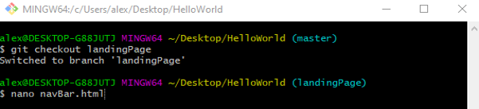
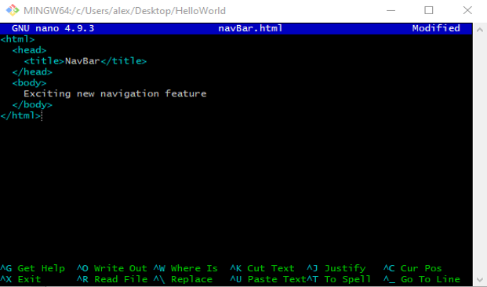
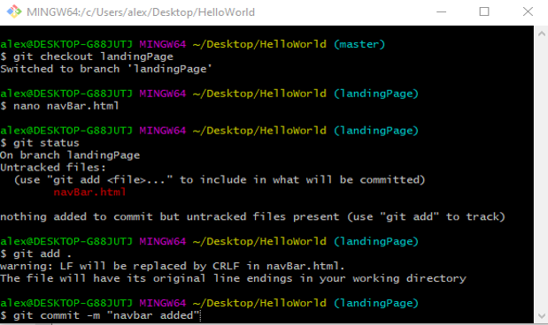
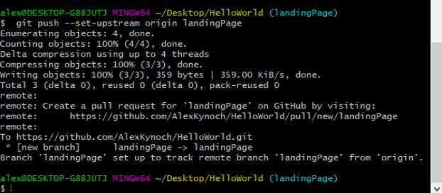
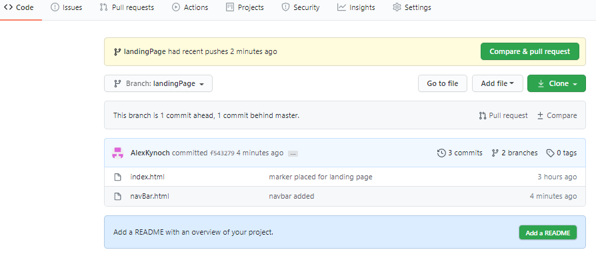
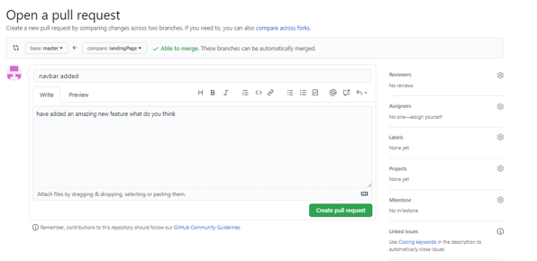
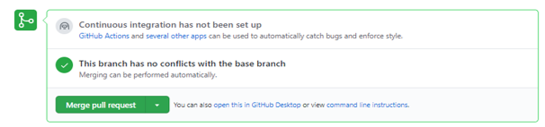
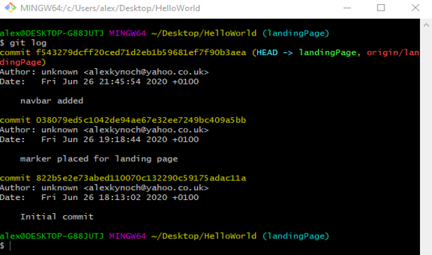
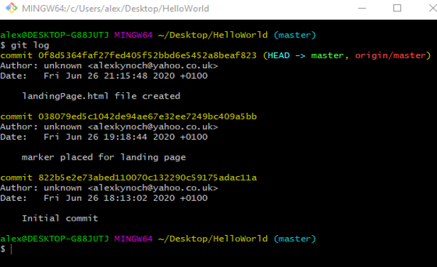

What is a Pull Request?
Making a Pull Request
A pull request is a way to tell others about a changes you pushed to a git hub repository – this gives others a chance to look at your changes, make suggestions about modifications and approve your changes before committing them to the Master Branch.
If we were to create a new branch, create a new file and edit it.

Stage and commit the new file.
And push to GitHub.
If we change the branch in github to landingPage we can see navBar.html
If we click pull request
Add assignees create pull request the assignees will look at it and if approved it can be merged into the master branch. As mine has no assignees it's approved has no conflicts and can be merged if I want to.
Logs
git logwill show you everthing that was committed. This is everything committed on the landingPage branch.
And everthing committed from master.
